CLUTTER CUP / BREAKFAST 01
Одна кухня.
Большой путь к завтраку.
Новый непрерывный маршрут: 605.6 u, десять связанных секторов, подъём от пола до рабочей поверхности. Первые три сектора — образец для художественной приёмки.
Играть в тестовую сборку Лёгкий профильПубличный build ID: загрузка…
Это работающая проверочная версия. Последующие семь секторов остаются техническим продолжением; художественное соответствие референсу ещё требует оценки пользователя.
Полный проезд
Запись без ускорения, 960×600 / light. QA-автопилот управляет принятой машиной через обычные действия. Игровое время 120.27 с, 76 checkpoints, 0 эвакуаций, финиш 1/4. Из-за нагрузки записи реальное время видео может быть длиннее игрового. Записанный build: vs-2026-09-14T06:12:42.761Z.
Комната и высоты
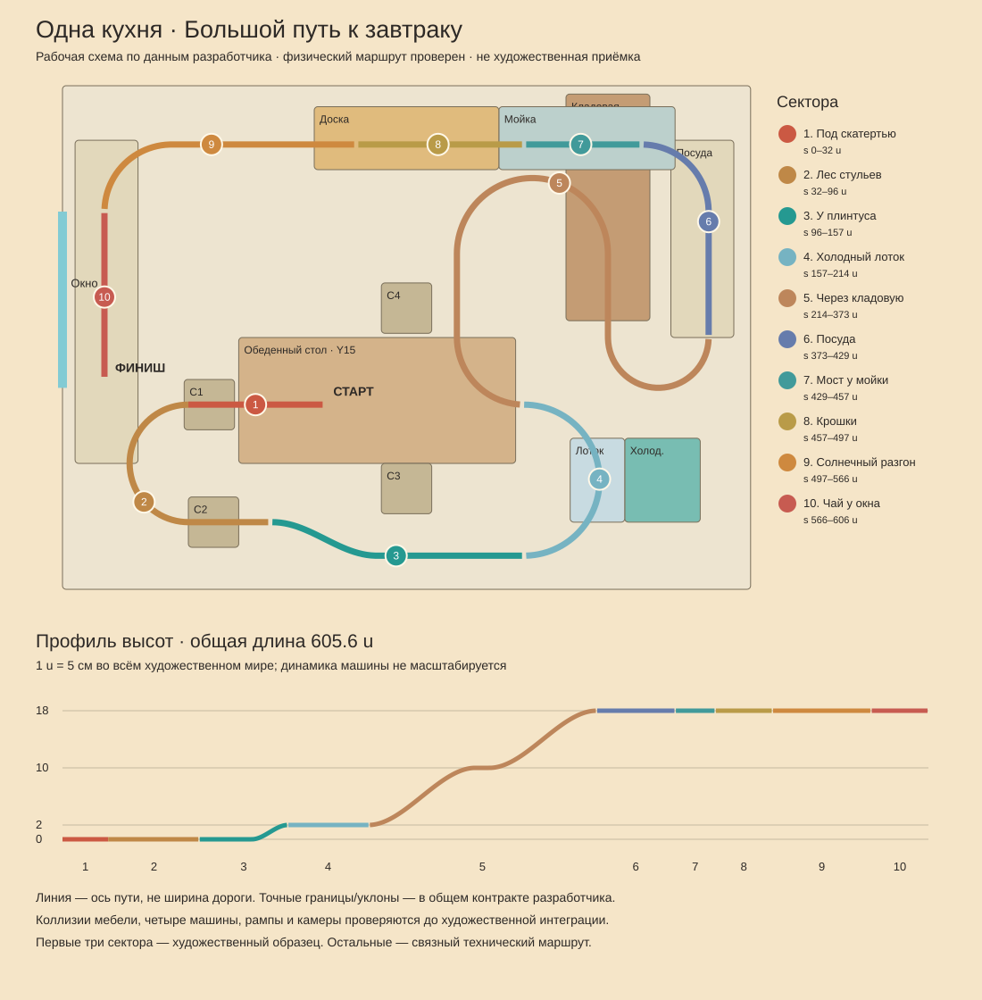
Согласованная схема по фактическим данным разработчика · открыть исходный размерМасштаб один: 1 u = 5 см. Комната 8,2×6 м, стул 45 см, стол 75 см, столешница 90 см. Размеры и динамика машины не изменены ради масштаба.
Первые три сектора: до / после
1. Под скатертью
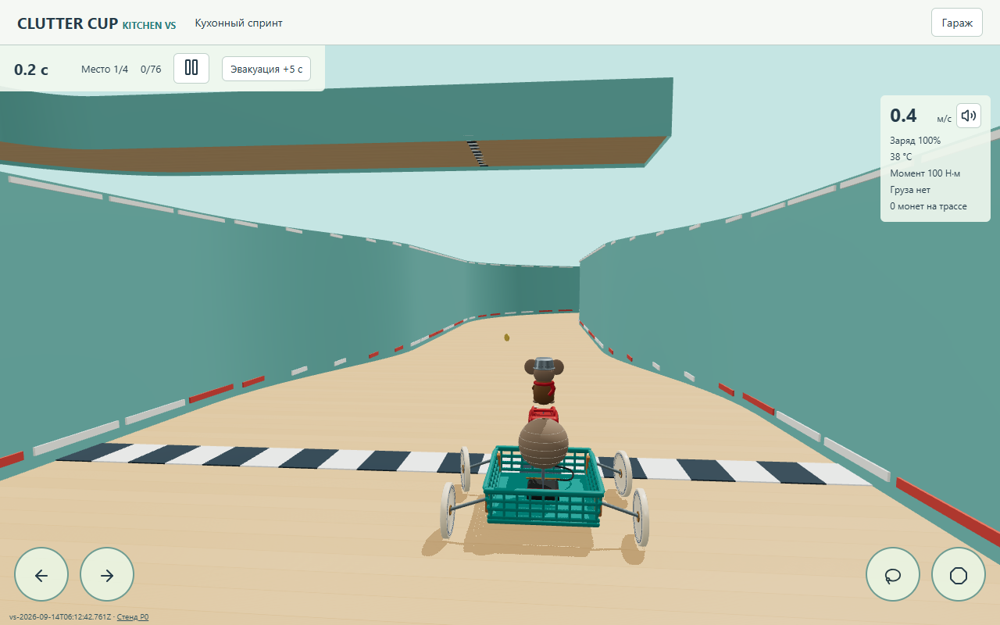
До — новый физический маршрут · открыть исходный размер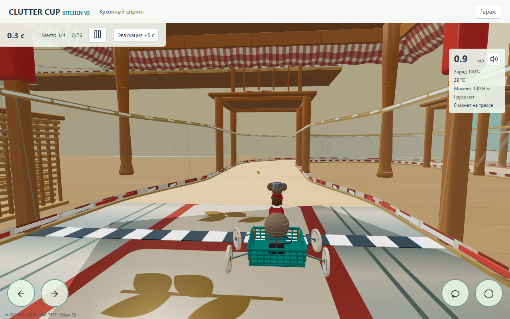
После — обычная камера, desktop 1280×800 · открыть исходный размер2. Два стула
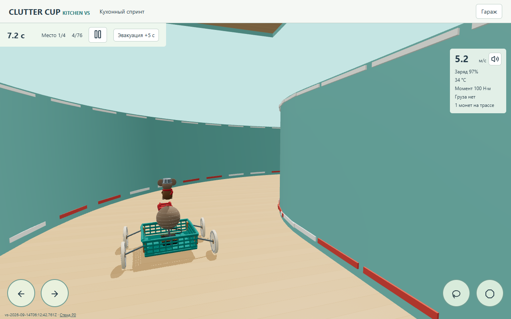
До — новый физический маршрут · открыть исходный размер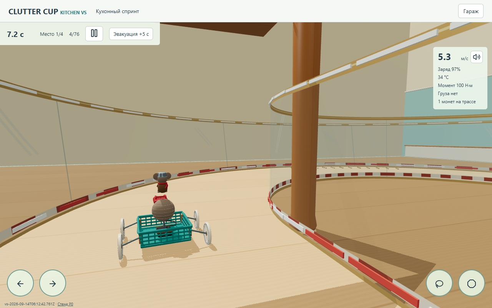
После — обычная камера, desktop 1280×800 · открыть исходный размер3. У плинтуса
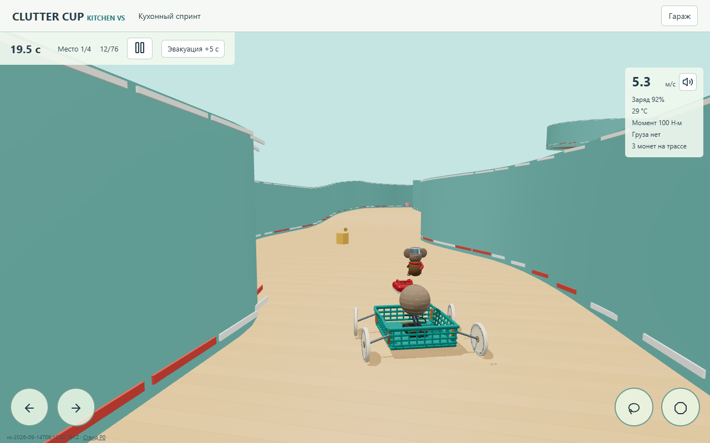
До — новый физический маршрут · открыть исходный размер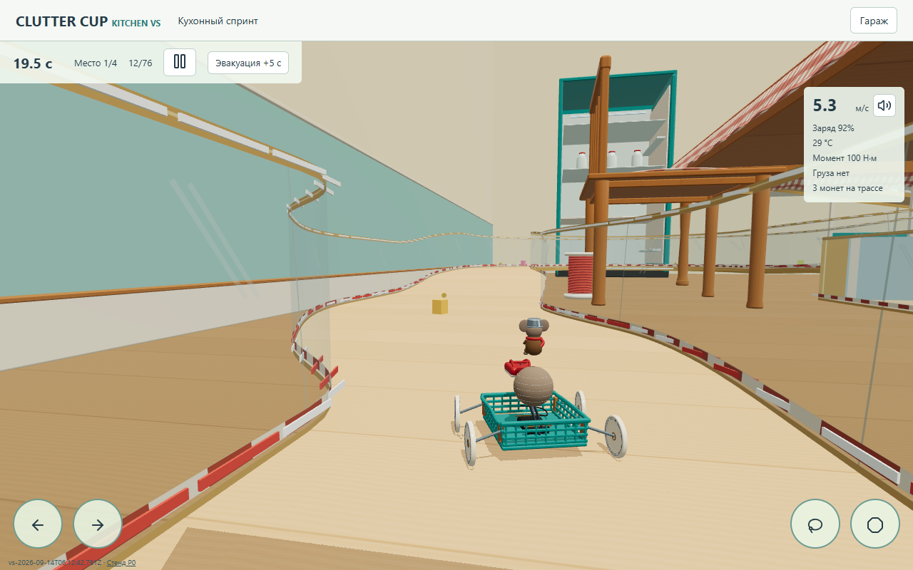
После — обычная камера, desktop 1280×800 · открыть исходный размерТелефон
Viewport844×390, DPR2, render cap1.5. Это эмуляция мобильного окна в Chromium, не замер на настоящем телефоне.
Десять игровых ракурсов
1. Под скатертью · s 0–32 u · открыть исходный размер2. Два стула · s 32–96 u · открыть исходный размер3. У плинтуса · s 96–157 u · открыть исходный размер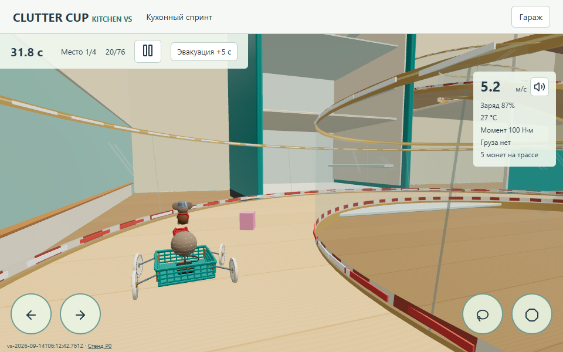
4. Холодный лоток · s 157–214 u · открыть исходный размер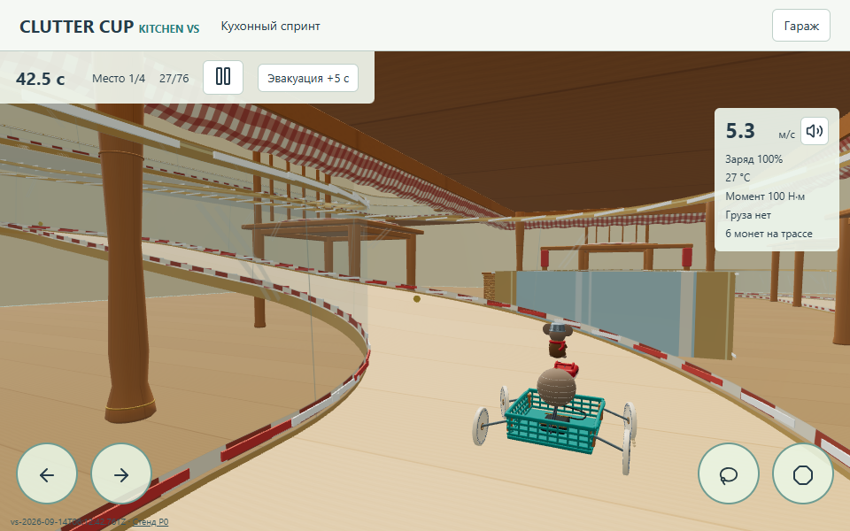
5. Открытая кладовая · s 214–373 u · открыть исходный размер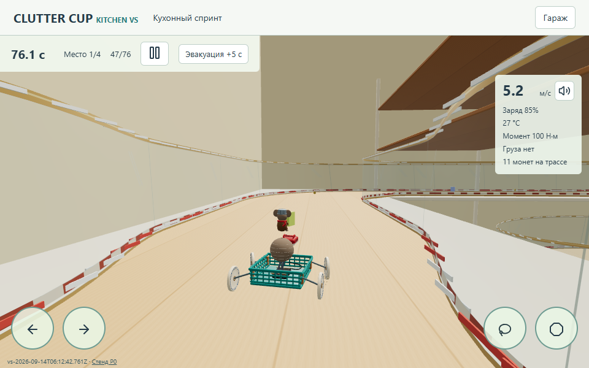
6. Галерея посуды · s 373–429 u · открыть исходный размер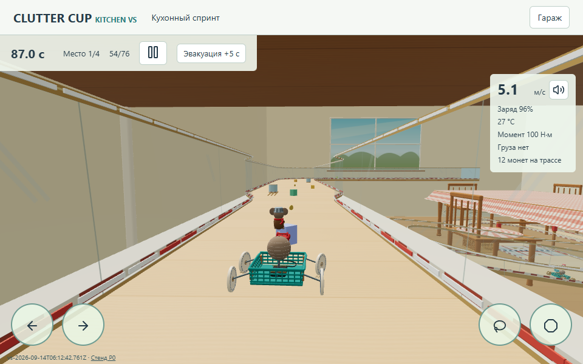
7. Переход у мойки · s 429–457 u · открыть исходный размер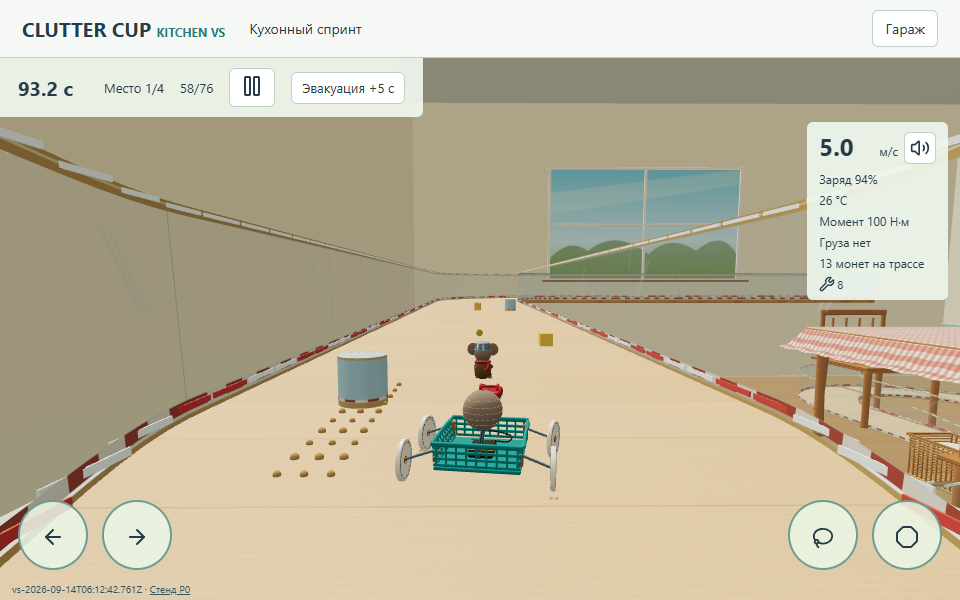
8. Крошки · s 457–497 u · открыть исходный размер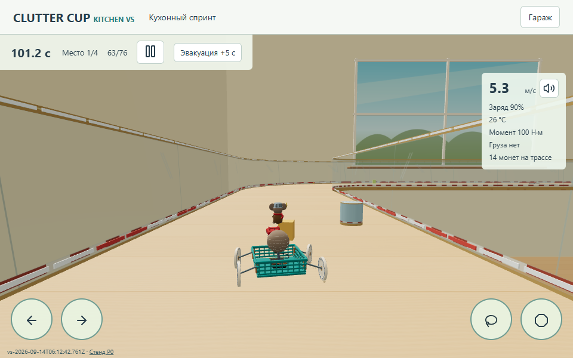
9. Солнечная прямая · s 497–566 u · открыть исходный размер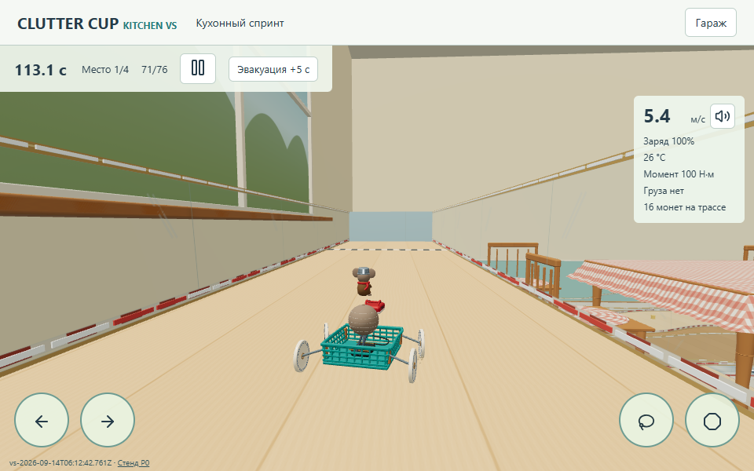
10. Чай у окна · s 566–606 u · открыть исходный размер Машина в гараже
Сравнение с референсами
 Композиция: путь вперёд, ясные края, боковые ориентиры. Нижняя часть исходного изображения повреждена; показана сохранившаяся верхняя область.
Композиция: путь вперёд, ясные края, боковые ориентиры. Нижняя часть исходного изображения повреждена; показана сохранившаяся верхняя область.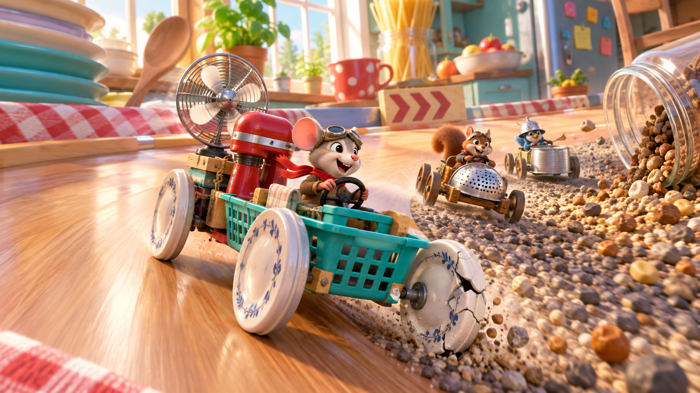
Тёплое дерево, бирюзовая эмаль, красная клетчатая ткань, бытовой масштаб.Перенесены непрерывная дорога и боковое окружение, единый масштаб мебели, округлые соединённые формы, различие ткани, дерева и металла. Остаются отличия: освещение проще, без непрямого GI; не хватает мелких бытовых деталей и выразительности персонажа. Принятые точки крепления машины и высокая посадка героя сохранены; они по-прежнему отличаются от референса. Последующие сектора, включая посуду и мойку, ещё не оформлены до того же уровня.
Проверки и производительность
Физическая основа: 73 проверки разработчика, включая весь маршрут, четыре финишировавших машины, слабый привод на подъёмах, форсаж и 40 ударов по границам. У соперников были 2/1/0 эвакуаций; отсутствие эвакуаций у всех ИИ не заявляется. Арт-проверки: точные позиции/индексы дорожного меша сохранены, мебель не закрывает центральный игровой ракурс на всей длине. Touch-руль и тормоз работают одновременно.
| Условия | p50 / p95 кадра | Canvas | MSAA |
|---|
| desktop / до | 33.3 / 33.4 мс | 1280×742 | да |
| desktop / после | 33.3 / 33.4 мс | 1280×742 | да |
| mobile / до | 33.3 / 33.4 мс | 1266×522 | да |
| mobile / после | 33.3 / 33.4 мс | 1266×522 | да |
Одинаковые viewport, профиль, seed1842, базовая машина и станция у начала третьего сектора. Последние180 кадров, без видеозаписи; один последовательный проход каждого варианта после завершения фоновых физических тестов. Windows / Intel HD620 / Chromium D3D11, лимит приложения30FPS. Эти значения включают работу игры, а не являются изолированным GPU-бенчмарком.
Физика, тяга, масса, гравитация и звук художественным оформлением не менялись. Профиль заменяется через breakfast.json.